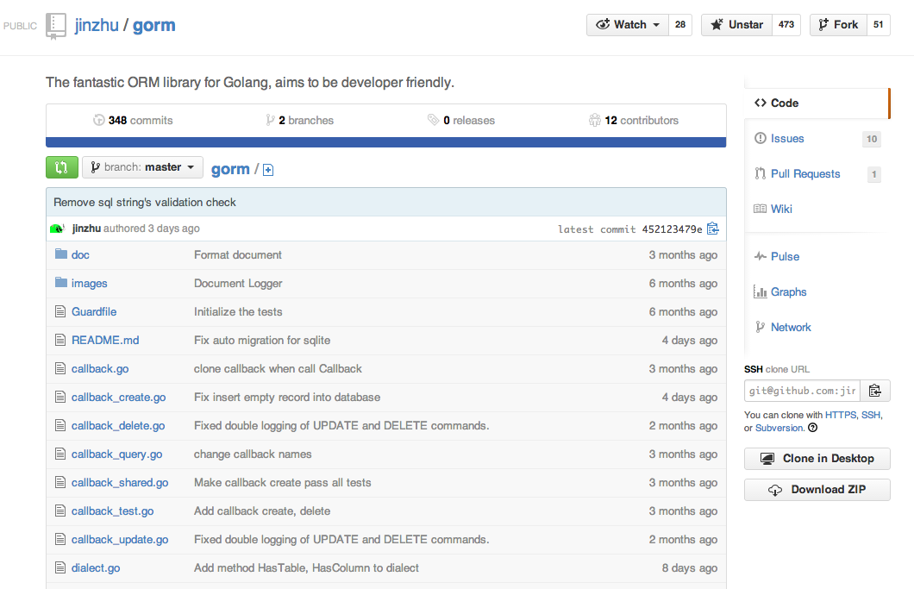
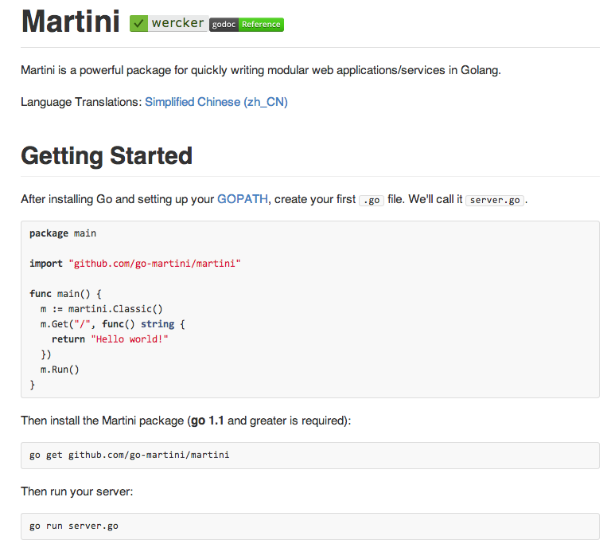
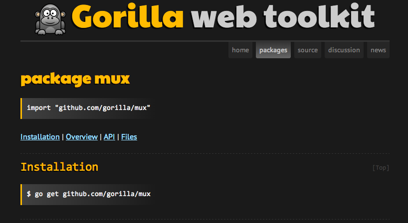
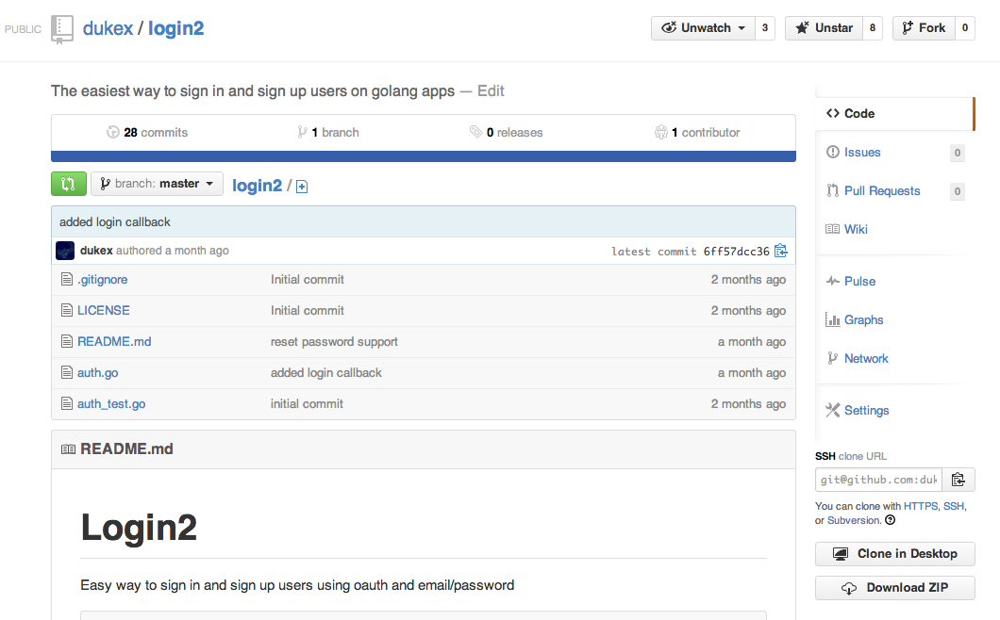
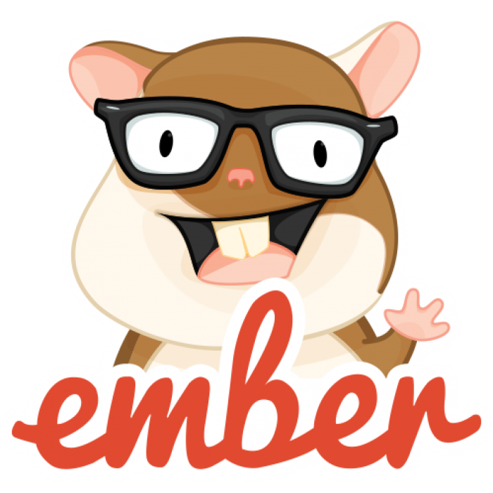

- Parser de RSS
- Persistir os dados
- Web server
- Autenticação
- Apresentar informações
Heroku -> Postgres

type Channel struct {
Id int64
Title string `sql:"not null;unique"`
Description string
ImageUrl string
Copyright string
LastBuildDate string
Url string `sql:"not null;unique"`
CreatedAt time.Time
UpdatedAt time.Time
DeletedAt time.Time
}
import (
"os"
"github.com/jinzhu/gorm"
pq "github.com/lib/pq"
)
var database gorm.DB
func init() {
databaseUrl, _ := pq.ParseURL(os.Getenv("DATABASE_URL"))
database, _ = gorm.Open("postgres", databaseUrl)
database.LogMode(os.Getenv("DEBUG") == "true")
database.AutoMigrate(Channel{})
}
channel := Channel{
Title: "Meu podcast",
Url: "http://url.com",
}
database.Save(&channel)
var channel Channel
database.Where("title = ?", "Meu podcast").First(&channel)
- Parser de RSS
- Persistir os dados
- Web server
- Autenticação
- Apresentar informações


r := mux.NewRouter()
r.HandleFunc("/enter", EnterHandler)
r.HandleFunc("/login", LoginHandler)
r.HandleFunc("/password", core.ChangePassword).Methods("POST")
// API
apiRouter := r.PathPrefix("/api").Subrouter()
apiRouter.StrictSlash(true)
apiRouter.HandleFunc("/subscriptions", getSubscriptions)
apiRouter.HandleFunc("/channels/{id}", getChannel)
http.Handle("/", r)
func getChannel(w http.ResponseWriter, r *http.Request) {
var (
vars = mux.Vars(r)
id = vars["id"]
)
m := martini.Classic()
m.Use(render.Renderer())
m.Get("/api", func(r render.Render) {
r.JSON(200, map[string]interface{}{"hello": "world"})
})
func ResponseJSON(w http.ResponseWriter, code int, data interface{}) {
var result []byte
var err error
result, err = json.Marshal(data)
if err != nil {
http.Error(w, err.Error(), 500)
return
}
w.Header().Set("Content-Type", "application/json")
w.WriteHeader(code)
w.Write(result)
}
- Parser de RSS
- Persistir os dados
- Web server
- Autenticação
- Apresentar informações
import "code.google.com/p/goauth2/oauth"
var config oauth.Config
const profileInfoURL = "https://www.googleapis.com/oauth2/v1/
userinfo?alt=json"
config := &oauth.Config{
ClientId: os.Getenv("GOOGLE_CLIENT_ID"),
ClientSecret: os.Getenv("GOOGLE_CLIENT_SECRET"),
RedirectURL: os.Getenv("GOOGLE_CALLBACK_URL"),
Scope: "https://www.googleapis.com/auth/userinfo.email",
AuthURL: "https://accounts.google.com/o/oauth2/auth",
TokenURL: "https://accounts.google.com/o/oauth2/token",
}
func(w http.ResponseWriter, r *http.Request) string {
url := config.AuthCodeURL("")
http.Redirect(w, r, url, http.StatusFound)
})
func(w http.ResponseWriter, r *http.Request) string {
code := r.FormValue("code")
t := &oauth.Transport{Config: config}
t.Exchange(code)
responseAuth, _ := t.Client().Get(profileInfoURL)
defer responseAuth.Body.Close()
core.CreateAndLoginUser(r, w, responseAuth)
return "<script>window.close();</script>"
})

Config
var l *login2.Builder
l = login2.NewBuilder()
provider := &login2.Provider{
RedirectURL: os.Getenv("GOOGLE_CALLBACK_URL"),
AuthURL: "https://accounts.google.com/o/oauth2/auth",
TokenURL: "https://accounts.google.com/o/oauth2/token",
Name: "google",
Key: os.Getenv("GOOGLE_CLIENT_ID"),
Secret: os.Getenv("GOOGLE_CLIENT_SECRET"),
Scope: "https://www.googleapis.com/auth/userinfo.email",
UserInfoURL: "https://www.googleapis.com/oauth2/v1/userinfo?alt=json",
}
l.NewProvider(provider)
Callbacks
l.UserSetupFn = func(provider string,
user *auth.User,
r *http.Response) (int64, error) { }
l.UserCreateFn = func(email string,
password string,
r *http.Request) (int64, error) { }
l.UserIdByEmail = func(email string) (int64, error) { }
l.UserPasswordByEmail = func(email string) (string, error) { }
l.UserResetPasswordFn = func(token string, email string) { }
HTTP Handler
r.HandleFunc("/auth/google", l.OAuthAuthorize('google'))
r.HandleFunc("/auth/callback/google", l.OAuthLogin('google'))
r.HandleFunc("/users/sign_up", l.SignUp)
r.HandleFunc("/users/sign_in", l.SignIn)
r.HandleFunc("/users/sign_out", l.SignOut)
r.HandleFunc("/dashboard", l.Protected(DashboardHandle))
l.URLS = login2.URLS{
Redirect: "/dashbaord",
SignIn: "/login",
SignUp: "/register",
ResetPasswordSuccess: "/reset_password_success"
}
beta.uhuraapp.com
- Parser de RSS
- Persistir os dados
- Web server
- Autenticação
- Apresentar informações

var App = Ember.Application.create({});
App.ApplicationAdapter = DS.RESTAdapter.extend({
namespace: 'api'
});
type Channel struct {
Id int
Title string
}
func main() {
chs := make([]Channel, 2)
chs[0] = Channel{Id: 1, Title: "First"}
chs[1] = Channel{Id: 2, Title: "Second"}
...
m.Get("/api/channels", func(r render.Render) {
r.JSON(200, chs)
})
}
type Channel struct {
Id int
Title string
}
func main() {
chs := make([]Channel, 2)
chs[0] = Channel{Id: 1, Title: "First"}
chs[1] = Channel{Id: 2, Title: "Second"}
...
m.Get("/api/channels", func(r render.Render) {
r.JSON(200, map[string]interface{}{"channels": chs})
})
}
{
channels: [
{
Id: 1,
Title: "First"
},
{
Id: 2,
Title: "Second"
}
]
}
type Channel struct {
Id int `json:"id"`
Title string `json:"title"`
}
{
channels: [
{
id: 1,
title: "First"
},
{
id: 2,
title: "Second"
}
]
}
App.Channel = DS.Model.extend({
title: DS.attr('string'),
});
App.IndexRoute = Ember.Route.extend({
model: function() {
return App.Channel.find();
}
});